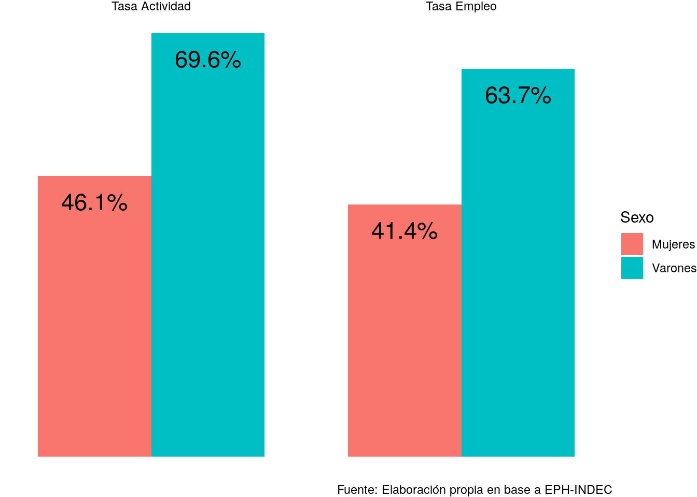

Capítulo 8 RMarkdown
8.1 Introducción
El objetivo de esta clase es comenzar a trabajar utilizando los formatos RNotebook y/o RMarkdown para realizar reportes compilados directamente en RStudio, de forma tal que nuestro trabajo pueda quedar documentado y ser fácilmente compartido con otras personas.
Mientras que en la clase presencial trabajamos bajo la modalidad de código en vivo, en las presentes notas de clase se replican los ejercicios propuestos.
En lugar de abrir un R Script, en esta ocasión abriremos un nuevo documento del tipo R Notebook o R Markdown.
Cargamos la librería tidyverse con la cual trabajaremos para procesar la información
library(tidyverse)Asentamos en la variable date el trimestre correspondiente a la información utilizada.
date <- "1er trimestre 2017"De esta forma, cuando presentemos los resultados de nuestro análisis, podremos contar automáticamente con las etiquetas para los cuadros, gráficos y comentarios. Por ejemplo:
Todos los datos refieren a los 31 aglomerados urbanos relevados en la EPH y en esta ocasión corresponden al 1er trimestre 2017.
8.2 Organización de los datos
Cargamos la base individual del 1er trimestre 2017.
base_individual <- read.table("Fuentes/usu_individual_t117.txt", sep=";", dec=",", header = TRUE, fill = TRUE)Modificamos la variable CH04 de la base de datos, de forma tal que se llame Sexo y contenga los valores Varones y Mujeres. De este modo los resultados se presentarán de forma más amena a su lectura.
base_individual <- base_individual %>%
mutate(Sexo = as.character(CH04),
Sexo = case_when(Sexo=="1" ~ "Varones",
Sexo=="2" ~ "Mujeres"))Construimos la variable NIVEL_EDUCATIVO, colapsando sus categorías en cuatro niveles.
base_individual <- base_individual %>%
mutate(NIVEL_EDUCATIVO = case_when(NIVEL_ED %in% c(1, 7) ~ "Sin Instrucción",
NIVEL_ED %in% c(2, 3) ~ "Primaria",
NIVEL_ED %in% c(4, 5) ~ "Secundaria",
NIVEL_ED == 6 ~ "Superior",
NIVEL_ED == 9 ~ "NS/NR"),
NIVEL_EDUCATIVO = factor(NIVEL_EDUCATIVO,
levels = c("Sin Instrucción",
"Primaria",
"Secundaria",
"Superior")))8.3 Tasas básicas de Mercado de trabajo
En esta instancia realizamos un ejercicio similar a los ya presentados en el curso. Calculamos las tasas de Actividad, Empleo y Desocupación, pero para cada uno de los sexos.
Si queremos mostrar la tabla resultante, debemos configurar el chunk de código de forma tal que el output sea “Show output only” (en caso de querer ocultar las líneas de código), o “Show code and output” (en caso de querer compartir también el código).
tabla1.1 <- base_individual %>%
filter(CH06 >= 14) %>%
group_by(Sexo) %>%
summarise(Poblacion = sum(PONDERA),
Ocupados = sum(PONDERA[ESTADO == 1]),
Desocupados = sum(PONDERA[ESTADO == 2]),
PEA = Ocupados + Desocupados,
'Tasa Actividad' = round(PEA/Poblacion*100, 1),
'Tasa Empleo' = round(Ocupados/Poblacion*100, 1),
'Tasa Desocupación' = round(Desocupados/PEA*100, 1)) %>%
select(-c(2:5)) %>%
gather(Indicadores, Valor, 2:4) %>%
spread(., Sexo, Valor)
tabla1.1## # A tibble: 3 x 3
## Indicadores Mujeres Varones
## <chr> <dbl> <dbl>
## 1 Tasa Actividad 46.1 69.6
## 2 Tasa Desocupación 10.2 8.5
## 3 Tasa Empleo 41.4 63.7Lo mismo sucede en el caso de los gráficos:
Gráfico 1. Población de 14 años y más. Tasas de Actividad y de Empleo por sexo. Total de aglomerados urbanos. 1er trimestre 2017.
tabla1.2_graf <- tabla1.1 %>%
filter(Indicadores %in% c("Tasa Actividad", "Tasa Empleo")) %>%
gather(., Sexo, porcentaje, 2:3)
ggplot(tabla1.2_graf,
aes(x = '', porcentaje,
fill = Sexo,
group= Sexo,
label = paste0(porcentaje, "%"))) +
geom_col(position = "dodge") +
geom_text(position = position_dodge(width = .9), vjust =2, size = 6) +
theme_void() +
facet_grid(~Indicadores) +
labs(caption = "Fuente: Elaboración propia en base a EPH-INDEC")
8.4 Empleo no registrado
Calculamos a continuación la tasa de empleo no registrado en el caso de las asalariadas mujeres y de los asalariados varones.
tabla2.1 <- base_individual %>%
filter(ESTADO==1,
CAT_OCUP==3) %>%
group_by(Sexo) %>%
summarise("Proporción de no Registrados" =
round(sum(PONDERA[PP07H==2])/sum(PONDERA)*100, 1))
inline_1 <- tabla2.1$`Proporción de no Registrados`[tabla2.1$Sexo == "Mujeres"]
inline_2 <- tabla2.1$`Proporción de no Registrados`[tabla2.1$Sexo == "Varones"]
tabla2.1## # A tibble: 2 x 2
## Sexo `Proporción de no Registrados`
## <chr> <dbl>
## 1 Mujeres 35.1
## 2 Varones 31.9Hay un 35.1% de las asalariadas a quienes sus empleadores no inscriben en la seguridad social, mientras que para los asalariados varones esta tasa de no registro es del 31.9%.
8.5 Brechas de ingresos
8.5.1 Brecha de ingresos totales mensuales
tabla3.1 <- base_individual %>%
filter(P47T > 0) %>%
group_by(Sexo) %>%
summarise(Media.ITI = round(weighted.mean(P47T, PONDII), 1)) %>%
spread(., Sexo, Media.ITI) %>%
mutate("Brecha del Ingreso Total Individual" = round(((Varones-Mujeres)/Varones)*100, 1))
inline_3 <- tabla3.1$`Brecha del Ingreso Total Individual`
tabla3.1## # A tibble: 1 x 3
## Mujeres Varones `Brecha del Ingreso Total Individual`
## <dbl> <dbl> <dbl>
## 1 10708. 14687. 27.1Observando los ingresos totales individuales de toda la población, se observa que la brecha entre varones y mujeres en este caso es de 27.1 puntos porcentuales. Es decir, contemplando todos los ingresos que se perciben, sean de origen laboral o no laboral (como jubilaciones y pensiones, cuotas alimentarias, subsidios, etc.), las mujeres perciben ingresos que, en promedio, son un 27.1% menores que los de los varones.
8.5.1.1 Ejercicio: Calcular la brecha de ingresos mensuales de las/os ocupadas/os
# Resolución
tabla4.1 <- base_individual %>%
filter(ESTADO == 1) %>%
group_by(Sexo) %>%
summarise(Media.IOP = round(weighted.mean(P21, PONDIIO), 1)) %>%
spread(., Sexo, Media.IOP) %>%
mutate("Brecha de ingresos de la ocup. princ." = round(((Varones-Mujeres)/Varones)*100, 1))
inline_4 <- tabla4.1$`Brecha de ingresos de la ocupación principal`
inline_5 <- tabla4.1$`Media de ingresos de las Mujeres`
inline_6 <- tabla4.1$`Media de ingresos de los Varones`
tabla4.1## # A tibble: 1 x 3
## Mujeres Varones `Brecha de ingresos de la ocup. princ.`
## <dbl> <dbl> <dbl>
## 1 9965 13218. 24.6Simultáneamente, en el mercado de trabajo, las mujeres ganan en promedio un % menos que los varones ( vs. ). Estos datos corresponden a la totalidad de ocupadas/os, cualquiera sea su categoría ocupacional, calificación o jerarquía, y observando en este caso los ingresos provenientes de la ocupación principal.
8.5.2 Brecha de ingresos mensuales por nivel educativo
Antes de calcular la brecha de los ingresos mensuales para cada nivel educativo, veremos la distribución que presenta cada uno de los sexos respecto de esta variable.
tabla5.1 <- base_individual %>%
filter(ESTADO == 1, !is.na(NIVEL_EDUCATIVO)) %>%
group_by(Sexo) %>%
mutate(Frecuencia = sum(PONDERA)) %>%
group_by(Sexo, NIVEL_EDUCATIVO) %>%
summarise(Tasa = round(sum(PONDERA)/unique(Frecuencia)*100, 1)) %>%
spread(., Sexo, Tasa) %>%
rename("Nivel Educativo" = NIVEL_EDUCATIVO, "% de Mujeres" = Mujeres, "% de Varones" = Varones)
tabla5.1## # A tibble: 4 x 3
## `Nivel Educativo` `% de Mujeres` `% de Varones`
## <fct> <dbl> <dbl>
## 1 Sin Instrucción 3.6 5.1
## 2 Primaria 23.4 37.2
## 3 Secundaria 41.6 41.1
## 4 Superior 31.4 16.5Calculamos el promedio de ingresos mensuales y horarios para cada combinación de Sexo y NIVELEDUCATIVO.
tabla5.2 <- base_individual %>%
filter(ESTADO == 1,
PP3E_TOT > 0,
PP3E_TOT != 999,
!is.na(NIVEL_EDUCATIVO)) %>%
group_by(Sexo, NIVEL_EDUCATIVO) %>%
summarise(IOP_hr = round(weighted.mean(P21/(PP3E_TOT * 30 / 7), PONDIIO), 2),
IOP_mensual = round(weighted.mean(P21, PONDIIO), 2)) %>%
arrange(NIVEL_EDUCATIVO, Sexo)8.5.3 Brecha de ingresos mensuales y horarios por nivel educativo
Presentamos los ingresos promedios y la brecha correspondientes a los ingresos mensuales.
tabla5.2.1 <- tabla5.2 %>%
select(-IOP_hr) %>%
spread(., Sexo, IOP_mensual) %>%
mutate(brecha = paste0(round((Varones-Mujeres)/Varones*100, 1), "%"))
tabla5.2.1## # A tibble: 4 x 4
## NIVEL_EDUCATIVO Mujeres Varones brecha
## <fct> <dbl> <dbl> <chr>
## 1 Sin Instrucción 5030. 8640. 41.8%
## 2 Primaria 5853. 9969. 41.3%
## 3 Secundaria 9025. 13505 33.2%
## 4 Superior 15369. 21135. 27.3%Presentamos los datos de montos y brecha correspondientes al ingreso por horas de las/os ocupadas/os, de acuerdo a su sexo y nivel educativo.
tabla5.2.2 <- tabla5.2 %>%
select(-IOP_mensual) %>%
spread(., Sexo, IOP_hr) %>%
mutate(brecha = paste0(round((Varones-Mujeres)/Varones*100, 1), "%"))
tabla5.2.2## # A tibble: 4 x 4
## NIVEL_EDUCATIVO Mujeres Varones brecha
## <fct> <dbl> <dbl> <chr>
## 1 Sin Instrucción 46.0 54.8 16.1%
## 2 Primaria 54.6 58.9 7.2%
## 3 Secundaria 68.9 79.3 13.1%
## 4 Superior 118. 134. 12%8.6 Horas semanales trabajadas
Finalmente, podemos indagar sobre los determinantes de la diferencia entre las brechas de ingresos mensuales y las brechas de ingresos horarios. Para eso, podemos ver la diferencia entre las horas que ofrecen los varones y las mujeres semanalmente en el mercado de trabajo.
horas <- base_individual %>%
filter(ESTADO == 1,
PP3E_TOT > 0,
PP3E_TOT != 999) %>%
group_by(Sexo) %>%
summarise("Horas semanales trabajadas" =
round(weighted.mean(PP3E_TOT, PONDIIO), 2))
horas## # A tibble: 2 x 2
## Sexo `Horas semanales trabajadas`
## <chr> <dbl>
## 1 Mujeres 32.6
## 2 Varones 42.1